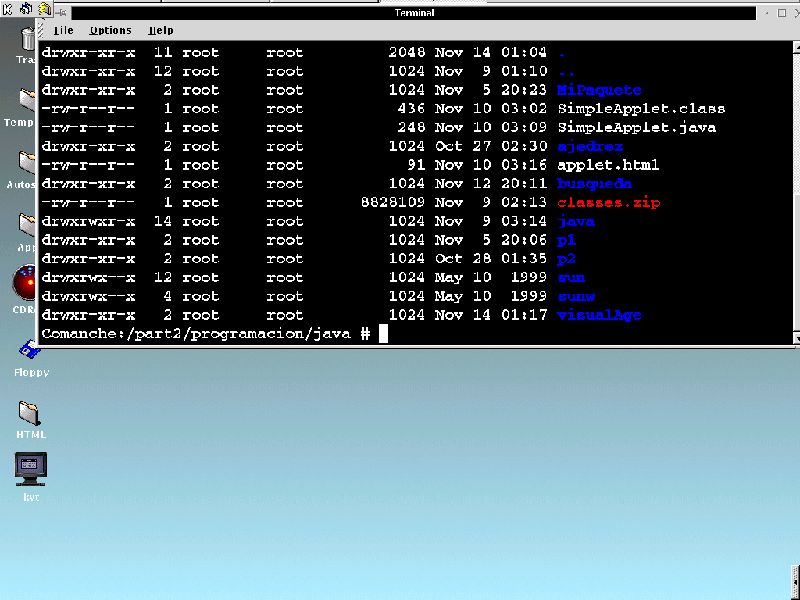

|
|
|
|
|
10.- Abriendo, escribiendo, borrando y cerrando archivos (por el dr7tbien)
10.1,. Introdución (por el dr7tbien)
10.2.-Streams, funciones de apertura de archivos y archivosn (por el dr7tbien)
10.3.- Función fopen() (por el dr7tbien)
10.4.- Funcion fclose() (por el dr7tbien)
10.5.- Escribiendo caracteres en los ficheros: fgetc(), fputc(), putc() y getc() (por el dr7tbien)
10.6.- Reapertura de archivos mediante freopen() (por el dr7tbien)
10.7.- Entrada y salida de cadenas de caracteres, fputs() y fgets() (por el dr7tbien)
10.8.- Funciones fprintf() y fscanf() (por el dr7tbien)
10.9.- Escritura y lectura de datos en bloques, fwrite() y fread() (por el dr7tbien)
10.10.- Desarrollo del programa articulo.exe usando estructuras de datos (por el dr7tbien)
10.11.- Borrado de datos en archivos (por el dr7tbien)
10.12.- Acceso a los ficheros de forma no secuencial, fseek() (por el dr7tbien)
10.13.- ¿Donde está el puntero de L/E? La función ftell() (por el dr7tbien)
10.14.- Función rewind()n (por el dr7tbien)
10.15.- Borrando ficheros con remove() (por el dr7tbien)
10.16.- Renombrando ficheros con rename() (por el dr7tbien)
10.17.- Añadiendo funciones de borrado al programa articulo.exe (por el dr7tbien)
10.18.- Detección del fin de fichero con feof() (por el dr7tbien)
Hasta este momento hemos visto la manera de introducir datos en programas en tiempo de ejecución. Aunque no nos lo parezca esto es un gran problema, pues cuando cerramos el programa perdemos todos los datos. Para ello los sistemas operativos disponene de ficheros o archivos donde podermos guardar los datos que nos interesan para poderlos recuperarlos posteriormente. Si has llegado a estas alturas de nuestras explicaciones es evidente que tienes una clara imagen de lo que es un archivo. No obstante vamos a dar un pequeño viaje sobre este concepto.
Si hasta el momento sólo has usado MSDOS, tu concepto de archivo se limitará a archivos de texto, ejecutables y archivos propios de los programas, estos dos últimos resulta que cuando los abrirmos arrojan símbolos extraños, que parecen del más allá, lo cual disgusta bastante, ya que impide conocer los entresijos de ciertos programas. Incluso tambien podríamos hacer una subdivisión en "archivos peligrosos o que no se tocan", es decir archivos propios de la configuración y arranque del sistema. Esto en el modo usuario.
Un sistema UNIX está dividido en grupos y cada grupo dispone de diferentes usuarios. Existen archivos comunes a todos los usuarios. El usuario es que da propiedades a los diferentes tipos de archivo. Cuando un usuario crea un archivo, ese archivo pertenece a dicho usuario y por simpatía con el propio grupo al que pertenece el user, a los usuarios de dicho grupo, les suele permitir ciertas licencias con el arrchivo. Tambien y por idéntica simpatía para con otros grupos y usuarios de dichos grupos, el archivo creado puede dejarse leer, escribir o incluso ejecutarlo. El superusuario, sin embargo, puede tener acceso sobre cualquier archivo del sistema. Si ejecutamos el comando ls -l (lista los archivos y subdirectorios del directorio en el que se ejecuta) sobre un directorio, que contenga archivos y directorios, obtendremos algo parecido a esto:

Delante de cada
listado de archivo aparecen listas de letras del tipo: drwxr-xr--
ó -rwr-xrw-. Si estas cadenas de letras comienzan con
la letra d, significan que son subdirectorios, si comienzan
por un '-', significa que son archivos. Las tres primeras letras a
continuación significan los permisos para el propietario del
archivo, las siguientes tres letras son los permisos para los
usuarios del grupo al que pertenece el propietario el archivo y las
últimas tres letras hacen referencia a los permisos para todos
los usuarios restantes, aunque provengan de Internet. La letra r,
inicial de read (leer), hace referencia al permiso de lectura. La
letra w, inicial de write (escribir), hace referencia al
permiso de escritura en el fichero. Si aparece la letra x en
tercer lugar nos indica que el fichero es ejecutable. Por último
si aparece un '-', sifnifica que el fichero carece del permiso
en el lugar que ocupa.
Linux, para conocer el espacio que ocupan y
dónde están los ficheros de todo su ámbito,
símplemente guarda la dirección del fichero y el tamaño
del mismo de forma que cuando lee un fichero de 3200 bytes, busca el
comienzo del fichero y lee 3200 bytes, incluyendo el carácter
EOF de fin de fichero. MSDOS usa este método en su forma
binaria, los sistemas UNIX lo hace con todos sus archivos.
La programación en C permite abrir, crear, borrar y modificar ficheros de acuerdo a ciertas funciones de biblioteca. Las funciones que se usan para poder abrir y manipular ficheros son fopen() y freopen(). C nos deja abrirlo para leer, para escribir o para ámbas cosas.
Cuando se ejecuta un programa, se abren tres ficheros que se asocian a tres dispositivos:
stdin dispositivo
de entrada de datos (teclado)
stdout dispositivo de salida
de datos (pantalla)
stderr dispositivo de error (pantalla)
Estos ficheros, son punteros constantes al flujo de información (stream) hacia una estructura de tipo FILE definida en stdio.h.
|
|
|
|||